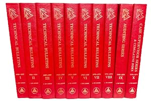

43:03 · 4 OPERE
I crimini di Julian Assange.
Il filo del discorso
L’arresto di Julian Assange nel2019 è il punto di partenza di una difesa del suo lavoro come resistenza culturale e denuncia degli abusi del potere. Il relatore contesta il trattamento giudiziario e mediatico del fondatore di WikiLeaks e collega il caso alla distinzione platonica fra legge e giustizia. Prima di elencare diverse pubblicazioni di WikiLeaks, sviluppa una critica della comunicazione, della formazione e della sostituzione del valore degli argomenti con il prestigio delle istituzioni. Nel finale passa dai documenti su guerre, detenuti e accordi commerciali agli scritti di Scientology, ribadendo il bisogno di esaminare ciò che sta dietro la presentazione ufficiale. Il titolo e l’elenco dei presunti crimini hanno un intento polemico: la scheda distingue le divulgazioni che il relatore considera meritorie dai capi d’accusa effettivi, dal procedimento britannico sulla libertà provvisoria e dagli sviluppi successivi. Le accuse personali e le interpretazioni del relatore non sono trasformate in accertamenti giudiziari; la detenzione ricordata nel video è contestualizzata rispetto alla liberazione del2024.
I libri nel discorso

Il castello (Das Schloss)
Identificazione probabile
Copertina: Suhrkamp, edizione tedesca in brossura, 423 pagine, prima uscita della collana 2006, ristampa 10 luglio 2025; romanzo pubblicato postumo nel 1926.
Immagine autentica dell’opera, controllata visivamente; l’edizione di riferimento non è attribuita al filmato.
Kafka e castello come immagine dell’apparato giudiziario: allusione probabile, non lettura o edizione identificata.
Passaggio 9:31 ↗ · Fonti e libro ↗
La Repubblica
Identificazione probabile
Copertina: Laterza · La Repubblica · edizione con testo a fronte di riferimento
Immagine associata all’ISBN di riferimento e controllata visivamente; edizione e traduzione non identificate come quelle citate o lette nel video.
Trasimaco e rapporto fra giustizia e potere: probabile RepubblicaI, titolo non pronunciato nel passo.
Passaggio 15:31 ↗ · Fonti e libro ↗
The Technical Bulletins of Dianetics and Scientology
Fotografia dell’opera in più volumi: Church of Scientology of California / Scientology Publications,1976, raccolta iniziale in10volumi, ISBN9780884040514; successive aggiunte e revisioni non identificano automaticamente il file del video.
Fotografia autentica della raccolta1976 in dieci volumi rossi, non copertina di una immaginaria Bibbia segreta. Nessun volume o numero di pagina è attribuito al file mostrato senza verifica.
Technical Bulletins of Dianetics and Scientology esplicitamente nominato come raccolta scaricata, con distorsione Bulletants nella trascrizione automatica.
Passaggio 40:37 ↗ · Fonti e libro ↗
Bibbia
Identificazione probabile
Copertina: San Paolo, 2014 · Nuova Versione dai Testi Antichi · edizione di riferimento
Albero della conoscenza del bene e del male richiamato metaforicamente; probabile Genesi2–3, senza lettura di versetti.
Passaggio 41:53 ↗ · Fonti e libro ↗